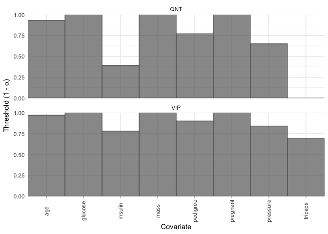
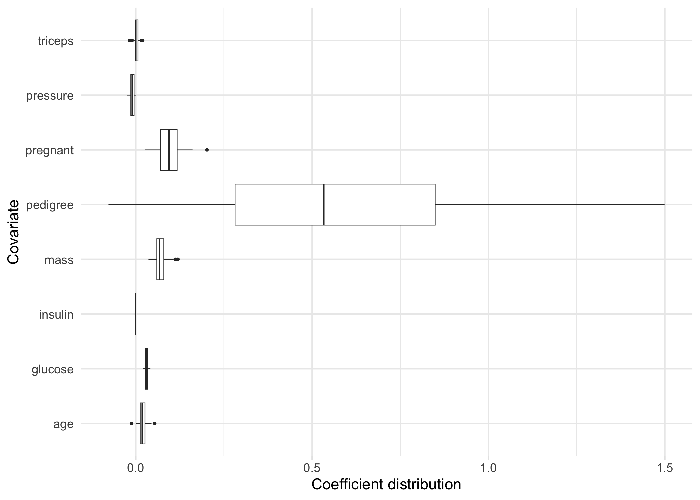
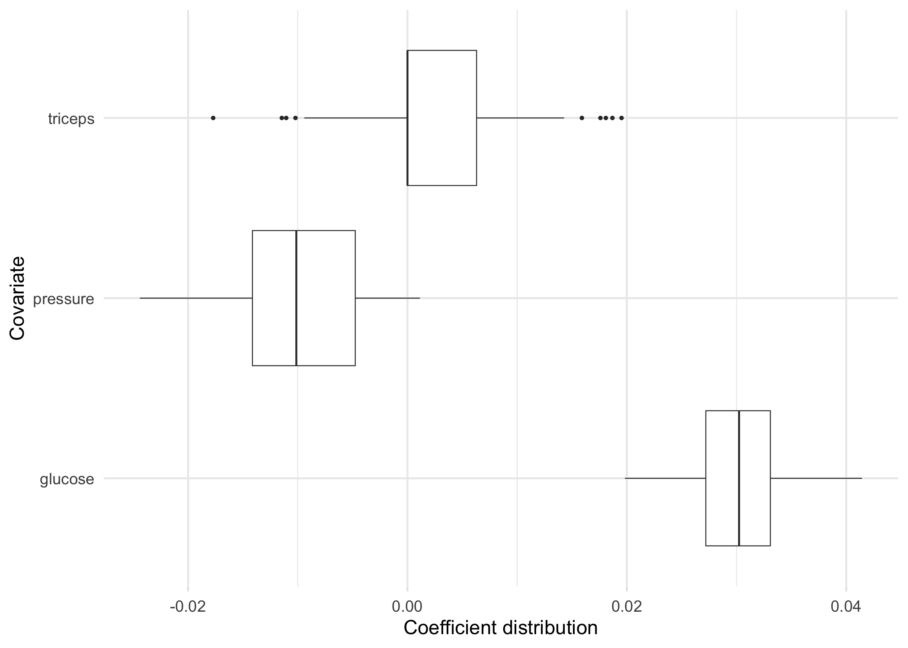
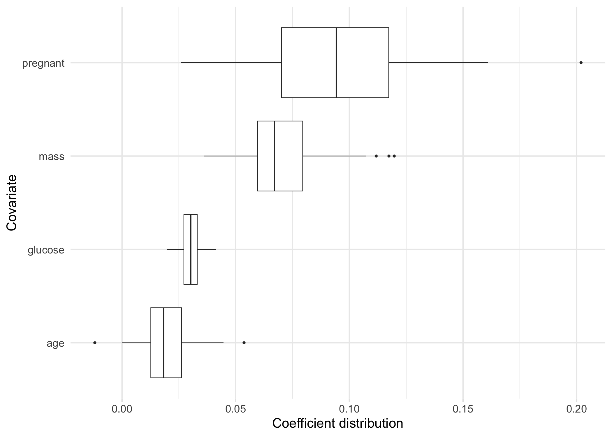
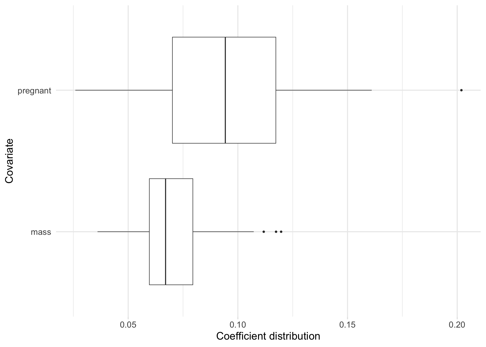
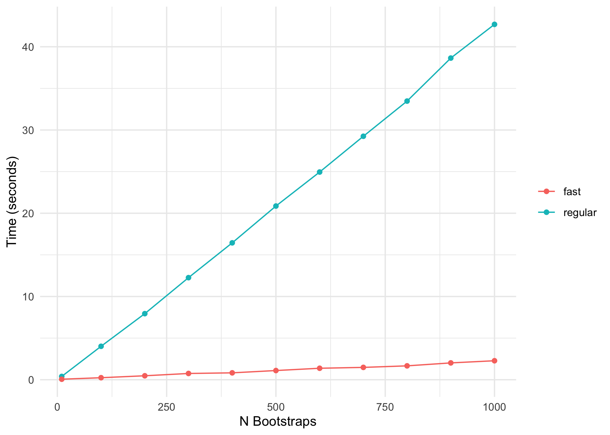

The goal of bolasso is to implement bootstrap-enhanced Lasso (and more generally, penalized regression) estimation, as proposed originally in Bach (2008) and extended by Bunea et al. (2011) and Abram et al. (2016). These methods focus primarily on variable selection and propose two similar, but slightly different, variable selection algorithms; the variable inclusion probability (VIP) algorithm (Bach; Bunea et al.), and the bootstrap distribution quantile (QNT) algorithm (Abram et al.). Beyond implementing both these variable selection methods, bolasso also provides utilities for making bagged predictions, examining coefficient distributions, and plotting.
Installation
Install bolasso from CRAN:
install.packages("bolasso")Or install the development version from GitHub with:
# install.packages("pak")
pak::pkg_install("dmolitor/bolasso@dev")Usage
To illustrate the usage of bolasso, we’ll use the Pima Indians Diabetes dataset (see the dataset documentation in the mlbench package) to determine which factors are important predictors of testing positive for diabetes. For a full description of the input variables, see the link above.
Load requisite packages and data
library(bolasso)
library(ggplot2)
library(tibble)
data(PimaIndiansDiabetes, package = "mlbench")
# Quick overview of the dataset
str(PimaIndiansDiabetes)
#> 'data.frame': 768 obs. of 9 variables:
#> $ pregnant: num 6 1 8 1 0 5 3 10 2 8 ...
#> $ glucose : num 148 85 183 89 137 116 78 115 197 125 ...
#> $ pressure: num 72 66 64 66 40 74 50 0 70 96 ...
#> $ triceps : num 35 29 0 23 35 0 32 0 45 0 ...
#> $ insulin : num 0 0 0 94 168 0 88 0 543 0 ...
#> $ mass : num 33.6 26.6 23.3 28.1 43.1 25.6 31 35.3 30.5 0 ...
#> $ pedigree: num 0.627 0.351 0.672 0.167 2.288 ...
#> $ age : num 50 31 32 21 33 30 26 29 53 54 ...
#> $ diabetes: Factor w/ 2 levels "neg","pos": 2 1 2 1 2 1 2 1 2 2 ...First, let’s create a train/test split of our data, and then run 100-fold bootstrapped Lasso with glmnet.
Variable selection
Next, using a threshold of 0.95 we can extract the selected variables using the VIP method, which extracts all variables that were selected (had non-zero coefficients) in >= 95% of the bootstrapped models. We’ll use the regularization parameter lambda.min that minimizes cross-validation error.
selected_variables(model, threshold = 0.95, method = "vip", select = "lambda.min")
#> # A tibble: 100 × 5
#> id pregnant glucose mass age
#> <chr> <dbl> <dbl> <dbl> <dbl>
#> 1 boot1 0.117 0.0384 0.0800 0.0145
#> 2 boot2 0.112 0.0331 0.0675 0.0115
#> 3 boot3 0.143 0.0257 0.112 0.0135
#> 4 boot4 0.130 0.0240 0.0789 0.0240
#> 5 boot5 0.0473 0.0215 0.0793 0.0183
#> 6 boot6 0.0634 0.0247 0.0666 0.0346
#> 7 boot7 0.101 0.0326 0.0656 0.0194
#> 8 boot8 0.0761 0.0258 0.0937 0.0359
#> 9 boot9 0.202 0.0238 0.0613 0.0113
#> 10 boot10 0.0926 0.0337 0.0779 0.0293
#> # ℹ 90 more rowsNote that this returned a tibble with the selected variables as columns and the coefficients for each of the bootstrapped models as rows. If you want to simply return only the variable names, you can add the var_names_only argument:
selected_variables(model, 0.95, "vip", var_names_only = TRUE)
#> [1] "pregnant" "glucose" "mass" "age"We can compare the selected variables using the VIP method to the QNT method, which selects all variables that have a 95% bootstrap confidence interval that does not contain 0:
selected_variables(model, 0.95, "qnt", var_names_only = TRUE)
#> [1] "pregnant" "glucose" "mass"Note that the number of selected variables with QNT will always be <= than with VIP. The default method for bolasso is method = "vip".
Variable selection thresholds
It may be that, instead of selecting variables for a given threshold and method, we want to see the largest threshold at which each variable would be selected by both the VIP and QNT methods. We can quickly visualize this with the plot_selection_thresholds function.
plot_selection_thresholds(model, select = "lambda.min")
You can also get these thresholds in a tibble:
selection_thresholds(model, select = "lambda.min")
#> # A tibble: 16 × 5
#> covariate method threshold alpha covariate_id
#> <chr> <chr> <dbl> <dbl> <int>
#> 1 age QNT 0.93 0.0700 8
#> 2 glucose QNT 1 0 2
#> 3 insulin QNT 0.39 0.61 5
#> 4 mass QNT 1 0 6
#> 5 pedigree QNT 0.77 0.23 7
#> 6 pregnant QNT 1 0 1
#> 7 pressure QNT 0.65 0.35 3
#> 8 triceps QNT 0 1 4
#> 9 age VIP 0.97 0.0300 8
#> 10 glucose VIP 1 0 2
#> 11 insulin VIP 0.78 0.22 5
#> 12 mass VIP 1 0 6
#> 13 pedigree VIP 0.9 0.1 7
#> 14 pregnant VIP 1 0 1
#> 15 pressure VIP 0.84 0.16 3
#> 16 triceps VIP 0.69 0.31 4Coefficients
All coefficients
bolasso also supports moving beyond variable selection and understanding the bootstrapped variable coefficients. We can extract a tidy tibble where each variable is a column, and each row represents a bootstrap fold, and the values are the corresponding estimated coefficients.
tidy(model, select = "lambda.min")
#> # A tibble: 100 × 10
#> id Intercept pregnant glucose pressure triceps insulin mass pedigree
#> <chr> <dbl> <dbl> <dbl> <dbl> <dbl> <dbl> <dbl> <dbl>
#> 1 boot1 -8.80 0.117 0.0384 -0.00768 0.00459 -0.00313 0.0800 1.08
#> 2 boot2 -7.26 0.112 0.0331 -0.00633 0.00873 -0.00246 0.0675 0.00375
#> 3 boot3 -7.17 0.143 0.0257 -0.0221 0.00815 -0.00262 0.112 0.717
#> 4 boot4 -7.08 0.130 0.0240 -0.0133 0.00517 0 0.0789 0.716
#> 5 boot5 -6.14 0.0473 0.0215 -0.00661 0.00237 -0.00173 0.0793 0.305
#> 6 boot6 -7.92 0.0634 0.0247 0 0 -0.000142 0.0666 1.10
#> 7 boot7 -6.88 0.101 0.0326 -0.0224 0.0129 -0.00100 0.0656 1.16
#> 8 boot8 -7.93 0.0761 0.0258 -0.0141 0.0102 -0.00103 0.0937 0.471
#> 9 boot9 -6.37 0.202 0.0238 -0.00875 0.0106 -0.000555 0.0613 0
#> 10 boot10 -8.39 0.0926 0.0337 -0.0104 0.00500 -0.000949 0.0779 0.793
#> # ℹ 90 more rows
#> # ℹ 1 more variable: age <dbl>bolasso also allows us to plot the bootstrap distribution of variable coefficients. Suppose that we want to quickly inspect this distribution for each of our variables. We can achieve this by simply plotting our model.
plot(model, select = "lambda.min")
Now, suppose for example we are particularly interested in the coefficient distributions for the triceps, pressure, and glucose variables. We can plot the distributions for just these variables:

Note: If there are more than 30 variables included in our model, then this will plot the 30 variables with the largest absolute mean coefficients.
Selected variable coefficients
If we want to plot the coefficient distributions for only the selected variables, we can use plot_selected_variables which will give us pretty much the same thing as plot.
plot_selected_variables(
model,
threshold = 0.95,
method = "vip",
select = "lambda.min"
)
Just like plot we can also focus on a subset of our selected variables.
plot_selected_variables(
model,
covariates = c(pregnant, mass),
threshold = 0.95,
method = "vip",
select = "lambda.min"
)
Predictions
Finally, we can make predictions using our bolasso model on new data. For example, the following code shows how we would generate predicted probabilites on our test data.
as_tibble(predict(model, test, select = "lambda.min", type = "response"))
#> # A tibble: 230 × 100
#> boot1 boot2 boot3 boot4 boot5 boot6 boot7 boot8 boot9 boot10 boot11 boot12
#> <dbl> <dbl> <dbl> <dbl> <dbl> <dbl> <dbl> <dbl> <dbl> <dbl> <dbl> <dbl>
#> 1 0.784 0.732 0.747 0.687 0.669 0.684 0.783 0.717 0.675 0.763 0.643 0.768
#> 2 0.239 0.295 0.260 0.212 0.353 0.232 0.156 0.199 0.249 0.215 0.268 0.161
#> 3 0.644 0.600 0.482 0.595 0.523 0.646 0.700 0.566 0.555 0.696 0.581 0.661
#> 4 0.321 0.316 0.633 0.431 0.367 0.203 0.558 0.349 0.407 0.331 0.369 0.376
#> 5 0.239 0.259 0.283 0.253 0.335 0.262 0.308 0.265 0.215 0.264 0.242 0.285
#> 6 0.370 0.362 0.389 0.410 0.413 0.419 0.441 0.371 0.373 0.407 0.357 0.367
#> 7 0.958 0.931 0.903 0.858 0.865 0.873 0.893 0.860 0.861 0.931 0.874 0.862
#> 8 0.355 0.445 0.385 0.320 0.334 0.234 0.338 0.257 0.514 0.294 0.352 0.272
#> 9 0.427 0.517 0.508 0.505 0.426 0.378 0.480 0.426 0.644 0.460 0.481 0.393
#> 10 0.465 0.446 0.536 0.500 0.532 0.541 0.496 0.564 0.435 0.526 0.432 0.567
#> # ℹ 220 more rows
#> # ℹ 88 more variables: boot13 <dbl>, boot14 <dbl>, boot15 <dbl>, boot16 <dbl>,
#> # boot17 <dbl>, boot18 <dbl>, boot19 <dbl>, boot20 <dbl>, boot21 <dbl>,
#> # boot22 <dbl>, boot23 <dbl>, boot24 <dbl>, boot25 <dbl>, boot26 <dbl>,
#> # boot27 <dbl>, boot28 <dbl>, boot29 <dbl>, boot30 <dbl>, boot31 <dbl>,
#> # boot32 <dbl>, boot33 <dbl>, boot34 <dbl>, boot35 <dbl>, boot36 <dbl>,
#> # boot37 <dbl>, boot38 <dbl>, boot39 <dbl>, boot40 <dbl>, boot41 <dbl>, …Note that this outputs an (n x p) matrix of predictions where n is the number of rows in our test set, p is the number of bootstraps, and each column represents the predictions from one of our bootstrapped models. To combine these into a single prediction per observation, we could take the average for each observation across the models:
Fast estimation 🏎️💨
For each bootstrapped model, bolasso uses cross-validation to find the optimal regularization parameter lambda. In glmnet, the default number of cross-validation folds is 10. This can quickly become computationally expensive and slow, especially when using many bootstrap replicates. For example, with 1,000 bootstrap replicates, this results in estimating models on 10,000 cross-validation sets.
To address this, we can activate the fast = TRUE argument in bolasso. Instead of using cross-validation to find the optimal lambda for each bootstrap model, fast bolasso runs a single cross-validated regression on the full dataset to identify the optimal lambda. Then each bootstrapped model uses that lambda as its regularization parameter.
The following comparison shows the computation time of standard bolasso vs fast bolasso across increasing bootstrap replicates. The plot displays the number of seconds each algorithm takes to complete.
# Compare standard vs. fast bolasso across different bootstrap values
times <- lapply(
c(10, 100, 200, 300, 400, 500, 600, 700, 800, 900, 1e3),
\(x) {
time_standard <- system.time({
bolasso(
diabetes ~ .,
data = train,
n.boot = x,
progress = FALSE,
family = "binomial"
)
})
time_fast <- system.time({
bolasso(
diabetes ~ .,
data = train,
n.boot = x,
progress = FALSE,
family = "binomial",
fast = TRUE
)
})
return(
tibble::tibble("regular" = time_standard[[3]], "fast" = time_fast[[3]])
)
}
)
# Make a data.frame out of the times
times_df <- do.call(rbind, times) |>
transform(
id = 1:11,
n_bootstrap = c(10, 100, 200, 300, 400, 500, 600, 700, 800, 900, 1e3)
) |>
reshape(
varying = c("regular", "fast"),
v.names = "time",
times = c("regular", "fast"),
timevar = "algorithm",
idvar = c("id", "n_bootstrap"),
direction = "long"
)
# Plot it!
ggplot(times_df, aes(x = n_bootstrap, y = time, color = factor(algorithm))) +
geom_point() +
geom_line() +
labs(x = "N Bootstraps", y = "Time (seconds)") +
scale_y_continuous(breaks = seq(0, 60, 10)) +
theme_minimal() +
theme(legend.title = element_blank())
Fast bolasso clearly achieves some pretty massive speedups over the standard version! This difference in speed will only be more accentuated when estimating on larger datasets.
What do we lose with standard vs. fast?
There’s never a free lunch, so to be clear about the tradeoffs between the standard and fast versions of bolasso, the following shows the difference in predictive accuracy on our hold-out test set.
model_standard <- bolasso(
diabetes ~ .,
data = train,
n.boot = 100,
progress = FALSE,
family = "binomial"
)
model_fast <- bolasso(
diabetes ~ .,
data = train,
n.boot = 100,
progress = FALSE,
family = "binomial",
fast = TRUE
)
model_standard_preds <- ifelse(
rowMeans(predict(model_standard, test, type = "response")) >= 0.5,
yes = 1,
no = 0
)
model_fast_preds <- ifelse(
rowMeans(predict(model_fast, test, type = "response")) >= 0.5,
yes = 1,
no = 0
)
truth <- as.integer(test$diabetes) - 1It’s important to note that fast bolasso should be thought of more as a rough-and-ready algorithm that is better for quick iteration and might have worse empirical performance than the standard algorithm.
Parallelizing bolasso
We can also fit bolasso bootstrap models in parallel via the future package. The future package supports a wide variety of parallelization, from local multi-core to remote compute clusters. Parallelizing bolasso is as simple as initializing the parallel method prior to executing the bolasso function. For example, the following setup will execute bolasso in parallel R sessions.
future::plan("multisession")
time_parallel <- system.time({
bolasso(
diabetes ~ .,
data = train,
n.boot = 1000,
progress = FALSE,
family = "binomial"
)
})
future::plan("sequential")
time_sequential <- system.time({
bolasso(
diabetes ~ .,
data = train,
n.boot = 1000,
progress = FALSE,
family = "binomial"
)
})Beyond the Lasso
bolasso also allows us to fit penalized regression models beyond the Lasso. For example, suppose we want to fit a bootstrap-enhanced elasticnet model with a mixing parameter of 0.5 (an even mix of the Ridge and Lasso regularization terms). We can simply pass the underlying glmnet::glmnet argument alpha = 0.5 through bolasso. The following code compares selected variables between the Lasso and elasticnet models.
References
[1]Abram, Samantha V et al. “Bootstrap Enhanced Penalized Regression for Variable Selection with Neuroimaging Data.” Frontiers in neuroscience vol. 10 344. 28 Jul. 2016, doi:10.3389/fnins.2016.00344
[2]Bach, Francis. “Bolasso: Model Consistent Lasso Estimation through the Bootstrap.” ArXiv:0804.1302 [Cs, Math, Stat], 2008. https://arxiv.org/abs/0804.1302.
[3]Bunea, Florentina et al. “Penalized least squares regression methods and applications to neuroimaging.” NeuroImage vol. 55,4 (2011): 1519-27. doi:10.1016/j.neuroimage.2010.12.028